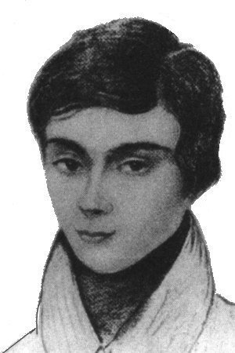

Evariste Galois

1811 - 1832, Paris
Geboren 1811 in Bourg-la-Reine in der Nähe von Paris. Von seinem Vater, dem Bürgermeister, erbte er die Spottlust
und von seiner Mutter die Hitzköpfigkeit. Diese Mischung mit der rasch sich entwickelnden genialen Begabung für
Mathematik machte Galois zu einem unruhigen, unzufriedenen jungen Mann, der ständig in Schwierigkeiten geriet. Er
stürzte sich in die politischen Auseinandersetzungen der Jahre 1830/31 und verbrachte einen Teil dieser Zeit als
politischer Häftling im Gefängnis Saint-Pélagie. Nach seiner Entlassung geriet er sofort wieder in politische Händel
und wurde zum Duell gefordert. Er nahm diese Aufforderung an, obwohl er wusste, dass er unterliegen würde.
In der Nacht vor dem Duell bestritt Galois wohl den dramatischsten Kampf eines Wissenschaftlers gegen die verrinnende Zeit, den es je gab. Im Wettlauf mit der Uhr versuchte er, seine Theorien über die Bedingungen, unter denen eine Gleichung beliebigen Grades algebraisch lösbar ist, zu Papier zu bringen. Er beschritt dabei völliges Neuland, indem er die sog. Gruppentheorie auf die Gleichungslehre anwandte. Die wegen der Eile nur skizzenhaft niedergeschriebene Arbeit bot ganzen Generationen von Mathematikern Stoff für ihre Arbeit.
Am Morgen des 30. Mai 1832 trat Galois zum Duell an und wurde von einem Bauchschuss getroffen, an dessen Folgen er am nächsten Tag starb.
Er war keine 21 Jahre alt geworden und wurde doch - zusammen mit Niels Abel - zum 'Erfinder' der Grundlagen der modernen Algebra, die mit ihren gruppentheoretischen Überlegungen die moderne Mathematik auf vielen Gebieten befruchtete.
In der Nacht vor dem Duell bestritt Galois wohl den dramatischsten Kampf eines Wissenschaftlers gegen die verrinnende Zeit, den es je gab. Im Wettlauf mit der Uhr versuchte er, seine Theorien über die Bedingungen, unter denen eine Gleichung beliebigen Grades algebraisch lösbar ist, zu Papier zu bringen. Er beschritt dabei völliges Neuland, indem er die sog. Gruppentheorie auf die Gleichungslehre anwandte. Die wegen der Eile nur skizzenhaft niedergeschriebene Arbeit bot ganzen Generationen von Mathematikern Stoff für ihre Arbeit.
Am Morgen des 30. Mai 1832 trat Galois zum Duell an und wurde von einem Bauchschuss getroffen, an dessen Folgen er am nächsten Tag starb.
Er war keine 21 Jahre alt geworden und wurde doch - zusammen mit Niels Abel - zum 'Erfinder' der Grundlagen der modernen Algebra, die mit ihren gruppentheoretischen Überlegungen die moderne Mathematik auf vielen Gebieten befruchtete.

Evariste Galois
L. Toti Rigatelli
Galois Theory: Lectures Delivered ...
E. Artin, A.N. Milgram